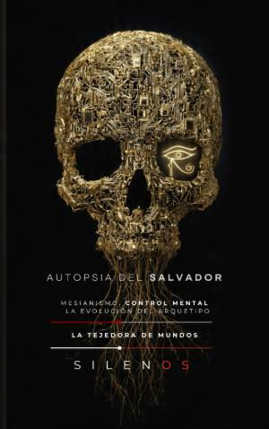

Illuminati
LA AUTOPSIA DEL SALVADOR : Mesianismo, Control Mental y la Evolución del Arquetipo
Sinopsis
¿Es la devoción absoluta una elección libre o el resultado de una ingeniería psíquica diseñada hace siglos? La Autopsia del Salvador propone un viaje analítico profundo a través de la historia, la sociología y la psicología profunda para desmantelar los mecanismos ocultos tras el líder carismático. Una investigación sobre el poder y la psique Esta obra se aleja de la narrativa convencional para ofrecer un marco teórico riguroso sobre cómo las estructuras de poder —desde antiguas sociedades secretas hasta la actual tecnocracia digital— han capturado la soberanía individual mediante la manipulación del inconsciente colectivo. Temas clave que descubrirás en esta obra: Arquitecturas del Control: El análisis de figuras históricas y organizaciones que perfeccionaron el arte de la sumisión, desde la fortaleza de Alamut hasta los experimentos de control mental del siglo XX. El Arquetipo del Salvador: Cómo la psicología de masas y los mecanismos de compensación psíquica generan una necesidad desesperada de figuras mesiánicas en contextos de crisis social. La Ingeniería del Engaño: El uso estratégico de la transgresión, el teatro ocultista y la neuroquímica para anular el juicio crítico del individuo. El Salvador Algorítmico: Una disección crítica de la era actual, donde la Inteligencia Artificial y los entornos digitales operan como la etapa final de un sistema diseñado para la captura perpetua de nuestra voluntad. ¿Para quién es este libro? Este ensayo es una herramienta indispensable para investigadores, estudiantes de sociología, historia de las ideas y cualquier lector interesado en comprender cómo las estructuras de dominación operan en la sombra de nuestra realidad cotidiana. Una lectura técnica, analítica y sin concesiones que desafía la percepción de lo que llamamos libertad en el siglo XXI. La Autopsia del Salvador no busca ofrecer respuestas sencillas, sino diseccionar la raíz de los procesos que han moldeado la psique humana frente al poder totalitario.